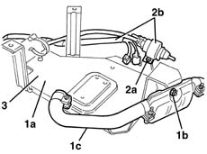

5020M16 supplementary independent heater mountbracket r r
- Path
- Procedures > 50 AUXILIARY UNITS > 5020 HEATER > 5020M supplementary independent heater > 5020M16 supplementary independent heater mountbracket r r
- Kind
- repair procedure (removal / refitting; the operation number is the code)
- Applies to
- all engines; all production periods
- Interactive page
- https://sloeber94.github.io/elrnDB-fMltpl/en/#/2891794
Applies to: all engines; production: da 09/03, da 04/02 a 08/03
 Removing
Removing
 Refitting
Refitting5020M10 independent heater unit - r r
1. After having removed the heater from the support (1a), undo the nut (1b) and remove the drainage pipe (1c).
2. Undo the nut (2a) and remove the fuel pump and wiring (2b).
3. Recover the mount.

Applies to: all engines; production: da 09/03, da 04/02 a 08/03
Refitting
RemovingCheck that the mounting is undamaged.
Place the fuel pump and wiring in position and secure it using the nut.
Place the drainage pipe in position and fasten it using the nut.